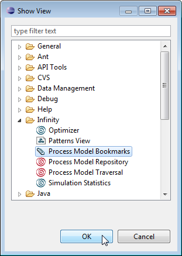
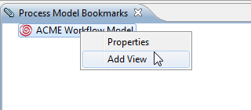
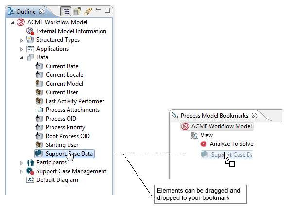

If the Process Model Bookmarks view is not already open, choose Window > Show View > Other... in the main menu and from the upcoming dialog Process Model Bookmarks.

Figure: Opening the Process Model Bookmarks View
The Process Model Bookmarks view has been conceived to give you the opportunity to cluster the components of your model in arbitrarily organized groups of tools. The upper tree view organizes the elements of the model by categories, e.g. by participants, processes or data. By using bookmarks you can organize e.g. the most frequently used components under a bookmark with an arbitrary name.

Figure: Adding a New Bookmark
A newly created bookmark can be renamed by right-clicking on the bookmark and choosing Rename from the pop-up menu. You can now drag an activity, a participant, a data or an application symbol from the Outline view onto the bookmarks symbol and drop it there.

Figure: Dragging-and-Dropping Elements to the Bookmark